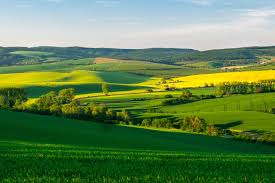

Ferramentas simples para acompanhar produção, custos e planejamento
Acessar dados
Registro e acompanhamento das atividades agrícolas.
Controle de custos, receitas e análise de lucro.
Organização de plantio, colheita e atividades.